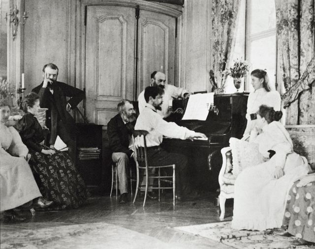

Auteurs
Achille-Claude Debussy est né le 22 août 1862 à Saint-Germain-en-Laye. Il est l'aîné d'une fratrie de cinq enfants. Il ne descend pas d'une famille musicienne. Ses parents Manuel-Achille Debussy et Victorine Manoury, sont de modestes vendeurs de faïence. Claude est instruit par sa mère et n'ira jamais à l'école.
En 1899, Claude Debussy se marie avec Rosalie Texier, mannequin d'une maison de haute couture renommée. En 1903, Rosalie fait une tentative de suicide en apprenant la liaison de son mari avec Emma Bardac. Le 2 août 1905, le divorce est prononcé. Quelques mois plus tard, Emma-Claude, fille adultaire de Claude Debussy et d'Emma Bardac, née. En 1908, Claude et Emma se marient. Le 25 mars 1918, il meurt à Paris.
Claude Debussy prend ses premières leçons de piano lors de son séjour chez sa tante et marraine Clémentine à l'âge de huit ans. À dix ans, grâce à une élève de Chopin, Madame Mauté de Fleurville, il entre au Conservatoire de Paris. Après plusieurs tentatives, Claude n'obtient qu'un second prix de piano ce qui murit en lui le projet de composer. Il réussit à intégrer la classe de composition. En 1884, il obtient le grand prix de Rome en tant que jeune compositeur. Mais Debussy s'intéresse à d'autres arts tels que la peinture et la poèsie. Il écrit en effet de nombreuses mélodies sur des poèmes. En 1889, l'Exposition universelle lui permet de découvrir de nouvelles sonorités dont il s'inspire. À partir de 1902, il crée beaucoup de musique.
